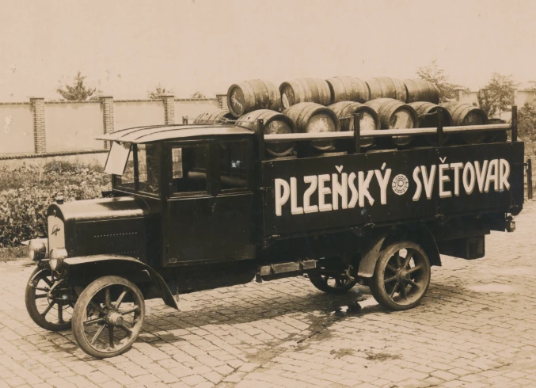
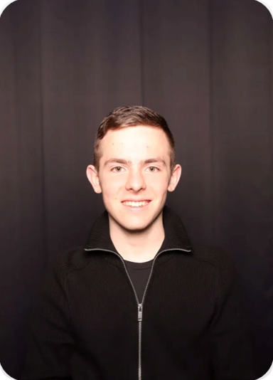
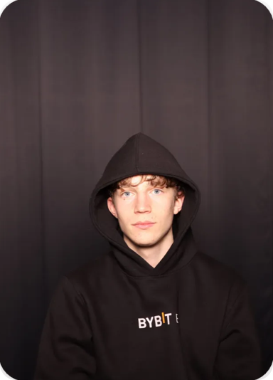
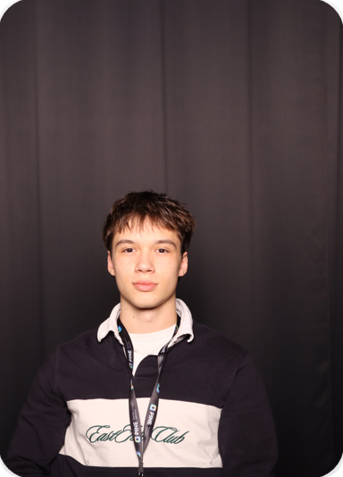
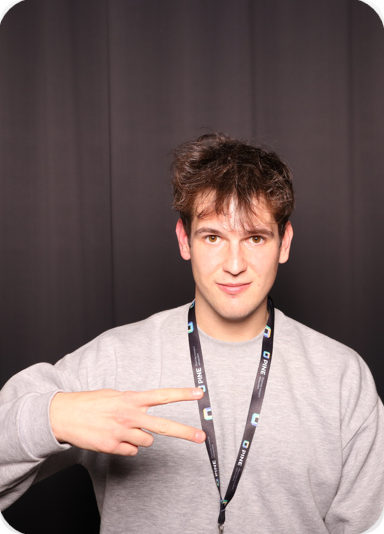
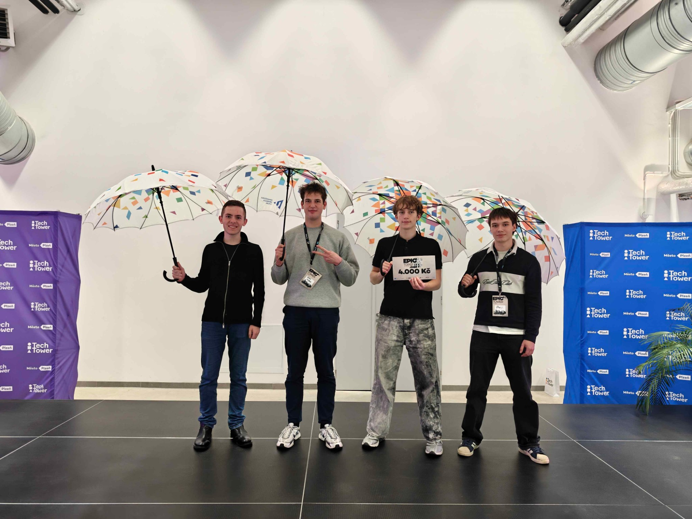

EPIC Tower Hackathon 2026, TechTower Plzeň
Cesta historií TechToweru
- 2. místo
3D hra v prohlížeči o pivovaru Světovar v letech 1926 - 1929, který stál tam, kde je dnes TechTower. Má pět krátkých levelů.
- Akce
- EPIC Tower Hackathon 2026, TechTower Plzeň
- Pořadatel
- SIT Port
- Datum
- 13. 11. 2026
- Tým
- 4 lidé
Téma
Tématem hackathonu byla historie budov dnešního TechToweru. Dřív tu stál pivovar Světovar, postavený v letech 1910 až 1913, a tak jsme se do něj rozhodli vrátit. Akce byla naplánovaná na dva dny, nakonec ale proběhla během jednoho.
Hru jsme dělali ve čtyřech: Tomáš Krůta, Andrii Fedorov, Oleksii Logosha a Adam Hojer.
Co jsme udělali
V pozadí menu běží krátký film: kamera pomalu krouží kolem modelu Světovaru v odpoledním světle a kolem komína létají rorýsi. Hra má příběhový režim, levely se odemykají postupně a u každého se ukládá nejlepší čas a hvězdy.
Levely se vybírají na 3D mapě areálu. Budovy jsou na ní v řezu i s patry, takže je vidět, kde se který level odehrává. Hra je v češtině, angličtině a němčině.
Pět levelů
- Jízda do Světovaru: s pivovarským autem a deseti sudy jedete z náměstí Republiky přes Plzeň roku 1926. Sudy padají v ostrých zatáčkách, na kostkách i na kolejích.
- Sklep: v ležáckém sklepě dotlačíte čtyři sudy k výtahu a přitom se bráníte krysám.
- Gangsteři: noc ve varně, gangsteři rozbíjejí okna a kradou sudy. Jako hlídač je odháníte brokovnicí nabitou solí, dokud nepřijede policie.
- Varna: běžíte po lávkách k hlavnímu ventilu páry, než kotel přeteče. Trasa vede skutečnými budovami, přes hodinovou věž a krytý most.
- Stáčírna: rozbitý pás vozí sudy dokola a vy přepínáte výhybky tak, aby každý sud prošel myčkou, plničkou a dostal se na expedici.
Historie a věrnost
Areál jsme postavili podle archivních plánů z let 1911 a 1912, takže budovy mají skutečné výšky. Varna má asi 16 metrů, hodinová věž 34 metrů a komín 48 metrů.
Interiéry vychází z archivních fotek z doby kolem roku 1930. Vnitřní příčky ale na plánech nejsou, takže ty jsou zčásti odhadnuté.
Jak je to udělané
Ve hře nejsou žádné stažené modely ani textury. Veškerá geometrie se generuje v kódu a textury se kreslí do canvasu. Stejně tak zvuky: motor, výstřel, rozbité sklo i pára se syntetizují přes Web Audio, bez jediného zvukového souboru.
Vzhled kolorované pohlednice dělá vlastní shader se sépií, vinětou a zrnem papíru. Aby hra běžela i na mobilu, slučujeme statickou geometrii, používáme instancing a rozlišení se upravuje podle FPS.
Postavené je to na Three.js a Vite v čistém JavaScriptu a nasazené v Dockeru s nginx.
Trailer
Dobové předlohy
Podle těchto a dalších dobových fotek a plánů jsme stavěli areál, nákladní vůz i interiéry. Screenshoty ze hry sem ještě doplním.



Tým
-

Tomáš Krůta
Herní vývojář, nápady
-

Andrii Fedorov
Herní vývojář, videa
-

Oleksii Logosha
Herní vývojář, prezentace
-

Adam Hojer
Kapitán týmu
Galerie

